随着互联网高速公路的不断发展，以往的单机应用系统逐渐没落，分布式系统逐渐成为主流。
分布式系统定义
分布式系统是其组件分布正在连网的计算机上，组件之间通过传递消息进行通信和动作协调的系统[1]。通过该定义可知，分布式系统具有以下重要特征：组件的并发性、缺乏全局时钟、组件故障的独立性。
现代分布式系统的例子有：
- Web搜索
- 大型多人在线游戏
- 金融交易
分布式系统架构演变
大多数的开发者最开始接触的是单机系统架构，即所有的数据和程序都在一台计算机上，这是分布式系统架构演变的起点。随着用户规模的不断增长和用户需求的不断变化，分布式系统架构开始不断演变。
系统架构演化历程-初始阶段架构
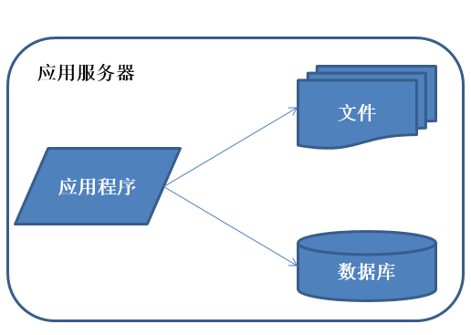
初始阶段的小型系统中应用程序、数据库、文件等所有的资源都在一台服务器上。随着业务量的增长，小型系统的负载将越来越重。但如果没有达到单台机器的性能瓶颈，则根本没必要进行分布式架构，可以考虑机器升级，提高机器配置解决问题。或者考虑技术升级，更换更加高效或者场景适合的技术。
系统架构演化历程-应用服务和数据服务分离
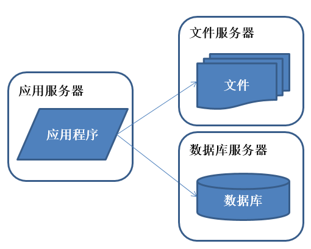
数据量增加，单台服务器性能及存储空间不足，需要将应用和数据分离，并发处理能力和数据存储空间得到了很大改善。
系统架构演化历程-使用缓存改善性能
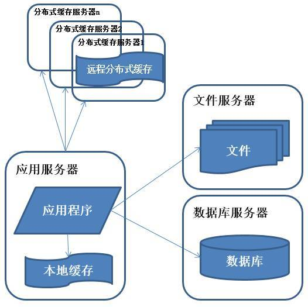
系统访问特点遵循二八定律，即80%的业务访问集中在20%的数据上。缓存分为本地缓存和远程分布式缓存，本地缓存访问速度更快但缓存数据量有限，同时存在与应用程序争用内存的情况。
系统架构演化历程-使用应用服务器集群
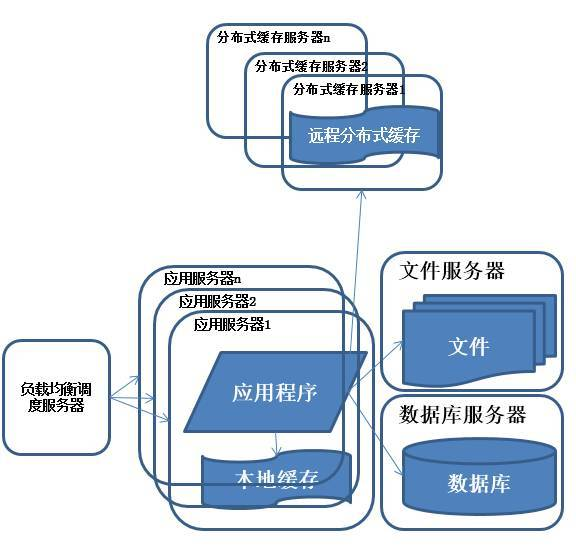
使用集群是系统解决高并发、海量数据问题的常用手段。通过向集群中追加资源，提升系统的并发处理能力，使得服务器的负载压力不再成为整个系统的瓶颈。
系统架构演化历程-数据库读写分离
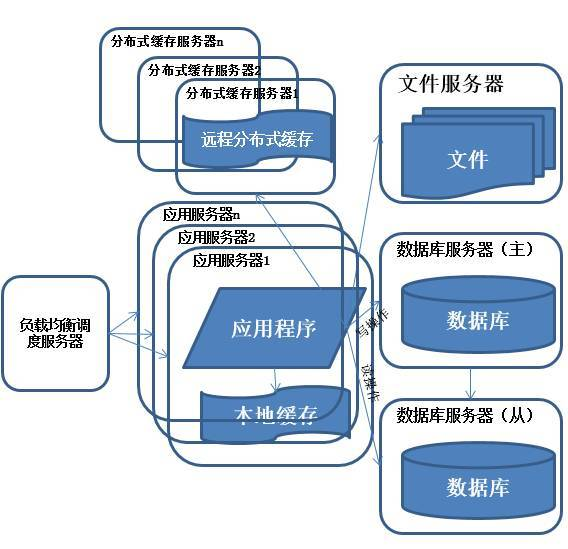
数据库访问通常是读多写少。针对这个情况，就是写一个主库，但是主库挂多个从库，然后从多个从库来读，以支撑更高的读并发压力。
系统架构演化历程-反向代理和CDN加速

为了应付复杂的网络环境和不同地区用户的访问，通过CDN和反向代理加快用户访问的速度，同时减轻后端服务器的负载压力。CDN与反向代理的基本原理都是缓存。
系统架构演化历程-分布式文件系统和分布式数据库
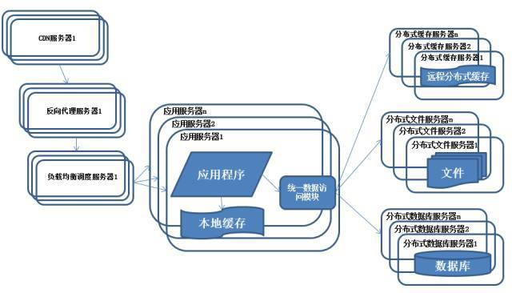
任何强大的单一服务器都满足不了大型系统持续增长的业务需求，数据库读写分离随着业务的发展最终也将无法满足需求，需要使用分布式数据库及分布式文件系统来支撑。分布式数据库是系统数据库拆分的最后方法，只有在单表数据规模非常庞大的时候才使用，更常用的数据库拆分手段是业务分库，将不同的业务数据库部署在不同的物理服务器上。
系统架构演化历程-使用NoSQL和搜索引擎
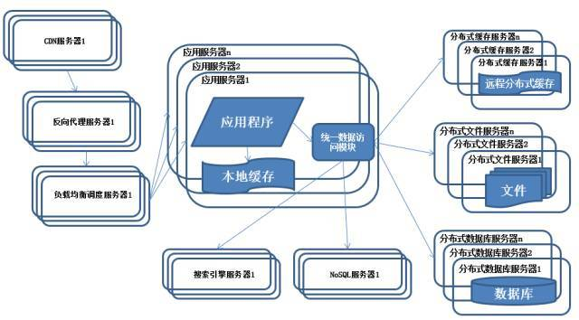
随着业务越来越复杂，对数据存储和检索的需求也越来越复杂，系统需要采用一些非关系型数据库如NoSQL和分数据库查询技术如搜索引擎。应用服务器通过统一数据访问模块访问各种数据，减轻应用程序管理诸多数据源的麻烦。
系统架构演化历程-业务拆分
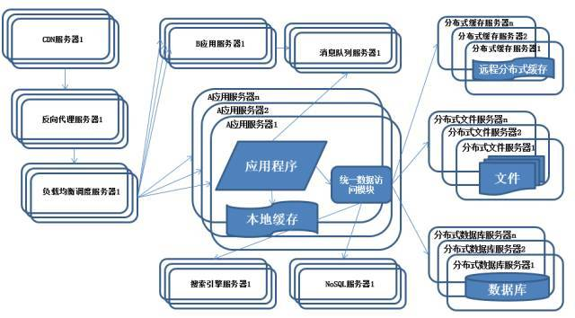
为了应对日益复杂的业务场景，通常使用分而治之的手段将整个系统业务分成不同的产品线，应用之间通过超链接建立关系，也可以通过消息队列进行数据分发，当然更多的还是通过访问同一个数据存储系统来构成一个关联的完整系统。
纵向拆分：将一个大应用拆分为多个小应用，如果新业务较为独立，那么就直接将其设计部署为一个独立的Web应用系统纵向拆分相对较为简单，通过梳理业务，将较少相关的业务剥离即可。
横向拆分：将复用的业务拆分出来，独立部署为分布式服务，新增业务只需要调用这些分布式服务横向拆分需要识别可复用的业务，设计服务接口，规范服务依赖关系。
系统架构演化历程-分布式服务
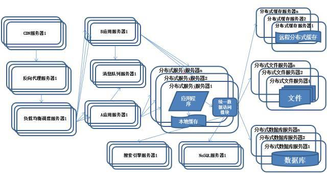
分布式服务关键技术
分布式服务应用将会面临以下问题：
- 当服务越来越多时，服务URL配置管理变得非常困难，硬件负载均衡器的单点压力也越来越大。
- 当进一步发展，服务间依赖关系变得错踪复杂，甚至分不清哪个应用要在哪个应用之前启动，架构师都不能完整的描述应用的架构关系。
- 接着，服务的调用量越来越大，服务的容量问题就暴露出来，这个服务需要多少机器支撑？什么时候该加机器？
- 服务多了，沟通成本也开始上升，调某个服务失败该找谁？服务的参数都有什么约定？
- 一个服务有多个业务消费者，如何确保服务质量？
- 随着服务的不停升级，总有些意想不到的事发生，比如cache写错了导致内存溢出，故障不可避免，每次核心服务一挂，影响一大片，人心慌慌，如何控制故障的影响面？服务是否可以功能降级？或者资源劣化？
为解决上述问题，可采用以下关键技术。
消息队列架构
消息对列通过消息对象分解系统耦合性，不同子系统处理同一个消息。
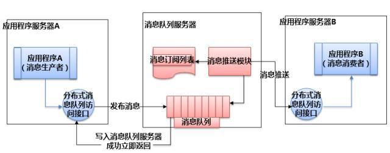
面向服务架构
服务框架通过接口分解系统耦合性，不同子系统通过相同的接口描述进行服务启用服务框架是一个点对点模型服务框架面向同构系统适合：移动应用、互联网应用、外部系统。
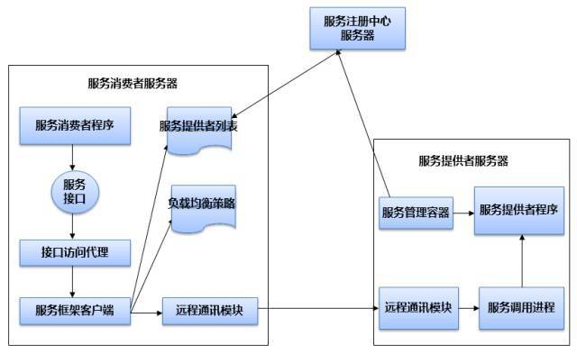
服务总线架构
服务总线架构同面向服务架构一样，均是通过接口分解系统耦合性，不同子系统通过相同的接口描述进行服务启用。服务总线架构是一个总线式的架构模型。
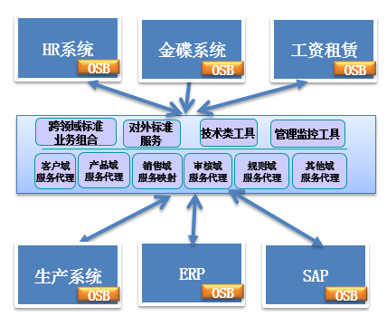
分布式系统交互的通信模式
分布式系统交互的通信模式共有五种：
- request/response模式（同步模式）：客户端发起请求一直阻塞到服务端返回请求为止。
- Callback（异步模式）：客户端发送一个RPC请求给服务器，服务端处理后再发送一个消息给消息发送端提供的callback端点，此类情况非常合适以下场景：A组件发送RPC请求给B，B处理完成后，需要通知A组件做后续处理。
- Future模式：客户端发送完请求后，继续做自己的事情，返回一个包含消息结果的Future对象。客户端需要使用返回结果时，使用Future对象的.get(),如果此时没有结果返回的话，会一直阻塞到有结果返回为止。
- Oneway模式：客户端调用完继续执行，不管接收端是否成功。
- Reliable模式：为保证通信可靠，将借助于消息中心来实现消息的可靠送达，请求将做持久化存储，在接收方在线时做送达，并由消息中心保证异常重试。
常用的分布式服务框架
现在业界比较成熟的服务框架有很多，比如：Hessian、CXF、Dubbo、Dubbox、Spring Cloud、gRPC、thrift等技术实现，都可以进行远程调用。
- Spring Cloud：Spring全家桶，用起来很舒服，只有你想不到，没有它做不到。可惜因为发布的比较晚，国内还没出现比较成功的案例，大部分都是试水，不过毕竟有Spring作背书，还是比较看好。
- Dubbox：相对于Dubbo支持了REST，估计是很多公司选择Dubbox的一个重要原因之一，但如果使用Dubbo的RPC调用方式，服务间仍然会存在API强依赖，各有利弊，懂的取舍吧。
- Thrift：如果你比较高冷，完全可以基于Thrift自己搞一套抽象的自定义框架吧。
- Montan：可能因为出来的比较晚，目前除了新浪微博16年初发布的，
- Hessian：如果是初创公司或系统数量还没有超过5个，推荐选择这个，毕竟在开发速度、运维成本、上手难度等都是比较轻量、简单的，即使在以后迁移至SOA，也是无缝迁移。
- rpcx/gRPC：在服务没有出现严重性能的问题下，或技术栈没有变更的情况下，可能一直不会引入，即使引入也只是小部分模块优化使用。
参考链接
- George Coulouris, Jean Dollimore， Tim Kindberg，Gordon Blair，金蓓弘，马应龙，等译. 分布式系统概念与设计[M].2013.
- 聊聊分布式系统的架构套路,by 大蕉.
- 分布式架构的演进,by 稳稳的幸福y.
- 互联网 Java 工程师进阶知识完全扫盲,by dooc.
- 聊聊Dubbo（一）：为何选择, by 猿码道.
- “12306”的架构到底有多牛逼？,by 绘你一世倾城.